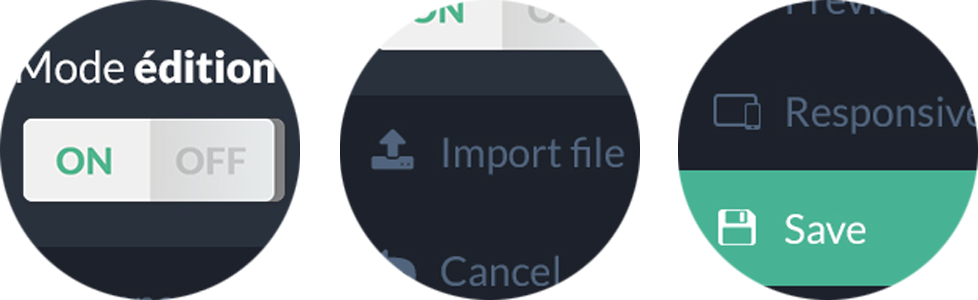

A new editing tool
Backnode helps you to edit the images and texts of your website in a simple and efficient way. You do not need to learn to code, you just have to open Backnode and you're done !
Learn more

How it works ?
Upload an HTML page in the CMS, and each editable content will be automatically displayed. Choose, tap, click and save.
Learn moreVidéo tutorial
Do you know
A fast and easy to use tool which makes your site responsive. Get access right from BackNode.
Discover ResponsizeJoin a great community
-
A free tool
This open source CMS can be use by everyone, free of charge.
-
Discover our community
Developers, Designers and users create a community. They help themselves always with goodwill and happiness
-
Grow up the tool
Thanks to all the people, the tool is always in progress for a best rendering day after day